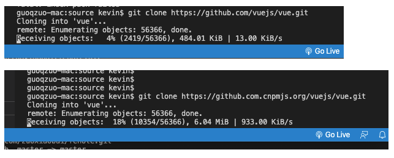

github clone下载太慢怎么解决
这篇文章发布于 2020/09/24，归类于 运维部署与版本控制
标签：
github clone慢，github clone超时，github clone不下来
以clone vue源码为例，默认git clone下载非常慢，我们可以把github.com链接改为镜像github.com.cnpmjs.org，这样下载速度就很快了，修改后效果对比图如下

具体过程
# git clone 下载vue源码，默认情况下速度只有10k/s
guoqzuo-mac:source kevin$ git clone https://github.com/vuejs/vue.git
Cloning into 'vue'...
remote: Enumerating objects: 56366, done.
^Cceiving objects: 5% (2823/56366), 556.01 KiB | 10.00 KiB/s
guoqzuo-mac:source kevin$
# 在github.com后面加上cnpmjs.org后，使用淘宝源，下载速度为 1.2M/s
guoqzuo-mac:source kevin$ git clone https://github.com.cnpmjs.org/vuejs/vue.git
Cloning into 'vue'...
remote: Enumerating objects: 56366, done.
remote: Total 56366 (delta 0), reused 0 (delta 0), pack-reused 56366
Receiving objects: 100% (56366/56366), 26.75 MiB | 1.22 MiB/s, done.
Resolving deltas: 100% (39568/39568), done.
guoqzuo-mac:source kevin$